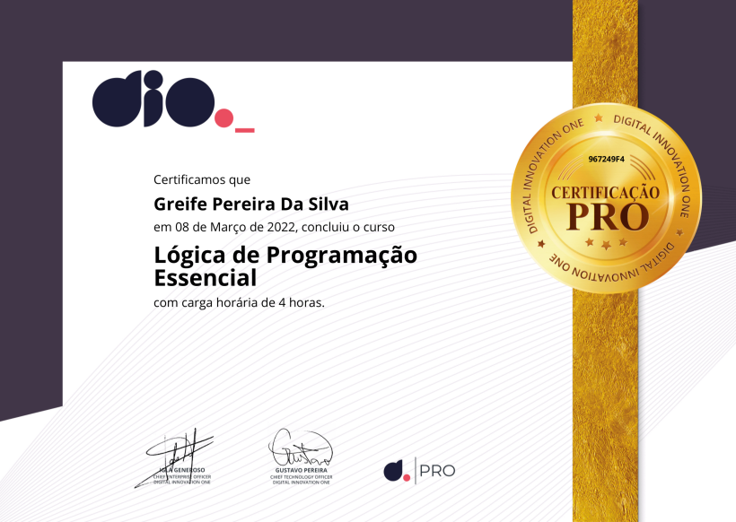

Full stack eduzz
Esse foi a minha primeira bootcamp que eu fiz, tinha muito conteúdo que eu absorvi, particularmente eu achei muito rico
em informação, e deu pra sentir que tinha um cuidado por traz como mentorias, lives, material de apoio, etc...
Desenvovimento Web
Primeiros passos web de muitos que eu darei na internet, por ai, foi importante aprender como funciona a web com esse
curso, agora as aplicações que farei vão ser melhores.
Git e Github
O git foi difícil, mas não impossil, eu revi as aulas mais de uma vez, porque eu estava preso em um código no terminal, depois
que eu aprendi ficou muito mais facil, tanto é que eu estou usando mais o terminal do que o navegador de pastas kkkk, e
o github foi o feijão desse arroz, por que os dois anda juntos no meu caso, um tecnologia muito incrivel.
SCRUM
Eu sabia que tinhamos que trabalhar como um time, agora esse método eu não tinha noção que existia eu achei muito
eficiente.
Html5 Css3
O famoso html5 e css3, agora eu sei como essas paginas de internet funcionam, aprendi a manipular os elemetos que contém
nessa linguagem de marcação, e foi só com elas que eu fiz essa página simples e objetiva.
Pensamento Computacional
Esse tipo de visão de um problema é muito diferente do que eu tinha, agora para lidar com problemas e quebrar ele em
partes para resolver ficou ainda mais facíl do que eu pensava.
Lógica de Programação
Eu já tinha um pensamento lógico então eu conseguifazer esse curso super tranquilo gostei bastante dos conseitos que
foi apresentado.
